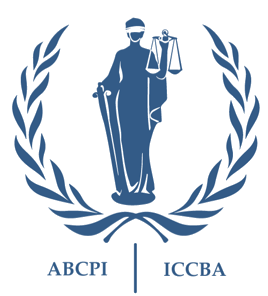
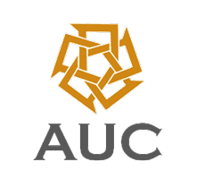

Mostafa Hassan (Founder)
The profile of TJG's founder is displayed here solely to assure anyone considering joining this initiative that it is being led by someone who possesses the necessary academic and professional experience to coordinate all volunteered efforts in order to achieve the stated goals of TJG. This is NOT for marketing purposes.
Professional Experience
-

United Nations
Investigator
Led internal and external investigations:
- Planning investigations;
- Exploring and pursuing avenues of inquiry and investigation leads;
- Interviewing complainants, witnesses, survivors, and subjects;
- Gathering and analysing digital and physical evidence; and
- Preparing investigation reports.
-
Special Tribunal for Lebanon
Evidence Reviewer (Prosecution)
Reviewed and analysed thousands of evidentiary materials, including telecommunications and co-location data, for trial preparations and fulfilling the Prosecutor's disclosure obligations.
-
International Criminal Court
Legal Consultant (Prosecution)
• Kenya I case (Prosecutor v. Ruto & Sang):
- Conducted legal research and drafted several legal submissions, including:
- Rule 68 Application: Rule 68 of the ICC Rules of Procedures and Evidence governs admission of prior recorded testimony, in lieu of oral testimony, in many instances including witness interference;
- Response to the defence "No Case to Answer" motion.
• Libya situation:- Drafted legal memoranda to assess 1) the relevance and utility of items of evidence to the prosecution case; and 2) the prospective admissibility of such items before the ICC Chambers.
- Investigated the domestic criminal proceedings against the ICC accused. My findings were reiterated as is in the statement of the ICC Prosecutor to the UN Security Council.
- Conducted legal research and drafted several legal submissions, including:
-
International Criminal Court
Intern (Prosecution)
Contributed to the preparation of the prosecution examination outlines for eight key prosecution witnesses.
-
Criminal Prosecution (Egypt)
Public Prosecutor
Prosecuted and investigated large-scale fraudulent schemes, terrorism, homicides, and gender-based violence.
Education
-
National Committee on Accreditation
Certificate of Qualification
Canadian JD equivalency
-
IU McKinney School of Law
Masters in International and Comparative Law (LL.M.)
-
Queen Mary University of London
Masters in Law (LL.M.)
-

Cairo University
Bachelor of Law (Licence en Droit)
Certifications & Courses
-
Massachusetts Institute of Technology
Professional Certificate Program in Legal Tech
-
Association of Certified Fraud Examiners
Certified Fraud Examiner
Currently inactive
-

ICC Bar Association
International Trial Advocacy Training Programme
-
Institute for International Criminal Investigations
International Investigator Course
-

American University in Cairo
Professional Certificate in Legal and UN Translation